Note
Hello, welcome to the SunFounder Raspberry Pi & Arduino & ESP32 Enthusiasts Community on Facebook! Dive deeper into Raspberry Pi, Arduino, and ESP32 with fellow enthusiasts.
Why Join?
Expert Support: Solve post-sale issues and technical challenges with help from our community and team.
Learn & Share: Exchange tips and tutorials to enhance your skills.
Exclusive Previews: Get early access to new product announcements and sneak peeks.
Special Discounts: Enjoy exclusive discounts on our newest products.
Festive Promotions and Giveaways: Take part in giveaways and holiday promotions.
👉 Ready to explore and create with us? Click [here] and join today!
Update Firmwares
Your device may not have the latest firmware due to ongoing product improvements. To ensure optimal and stable performance, please follow the steps below to check and update the firmware on your ESP32 CAM and R3 board.
1. Check Whether an Update Is Needed
Before using the GalaxyRVR for the first time, fully charge the battery with the supplied Type-C USB cable. After charging, turn the power on.
To start the ESP32 CAM, switch the mode to Run and press the Reset button on the R3 board. The bottom light strip will begin flashing to indicate a successful startup.
Note
If the bottom light strip shows a green flashing light, your ESP32 firmware is already up to date.
You may proceed to Quick Start.
If the bottom light strip flashes other color, you will need to:
2. Updating the ESP32 CAM Firmware
The ESP32 CAM broadcasts the Wi-Fi hotspot and captures video for the GalaxyRVR. If the firmware is outdated, these functions may not work properly. Follow the steps below to update the firmware.
Turn on the GalaxyRVR’s power switch. To start the ESP32 CAM, switch the mode to Run and press the Reset button on the R3 board.

Download the firmware file.
Extract the downloaded ZIP file. Locate the firmware file named
ai-camera-firware.ino.x.x.x.binand transfer it to your mobile device. You can use any file manager app, such as ES File Explorer or a file transfer utility.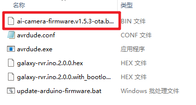
Connect your mobile device to the GalaxyRVR’s WiFi network.
The network name (SSID) is
GalaxyRVRand the password is12345678.If you see a warning stating “No Internet access,” please choose the option to “Stay connected.”

Open a web browser on your mobile device and navigate to
http://192.168.4.1to access the ESP32 CAM OTA update page.
Note
On this page, you will see OTA upgrade options in one of two interfaces. Version A (the former) and Version B (the latter) will appear depending on your firmware version. Simply select the corresponding upgrade steps based on the interface you see.
{kind=link}
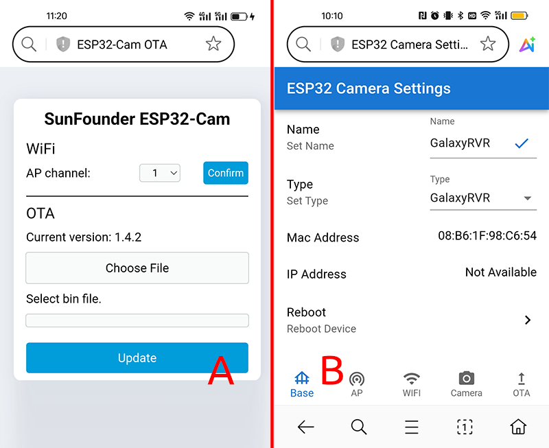
Version A
On the OTA page, click the button to select the firmware file.
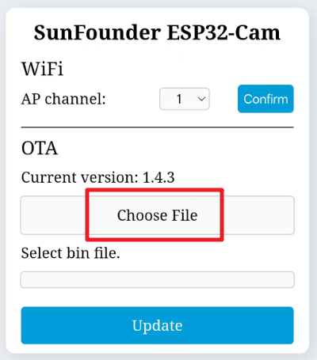
Choose the previously downloaded
ai-camera-firmware-vX.X.X-ota.binfile from your device and click Add.Click the Update button to start the firmware update process.
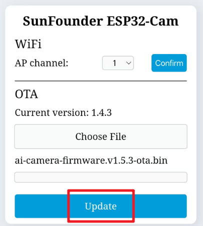
Wait for the update to complete.
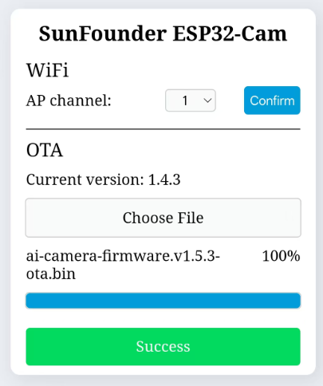
After the update is complete, you can close the web browser. Press the Reset button to reboot the device. The ESP32 CAM is now ready for normal operation.
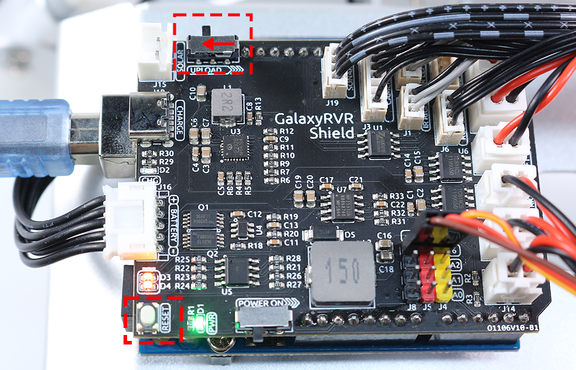
Note
After the update is complete, the GalaxyRVR’s WiFi hotspot name will change to “AI Camera-xxxxxx”, and the password will remain “12345678”.
{kind=link}
{kind=link}
{kind=link}
{kind=link}
{kind=link}
Version B
On the OTA page, check the current firmware version displayed on the webpage.
If your version number is higher than 1.5.1, an update is not required. You can skip the remaining steps and proceed directly to Quick Start.
If the version is 1.5.1 or lower, please continue with the update.
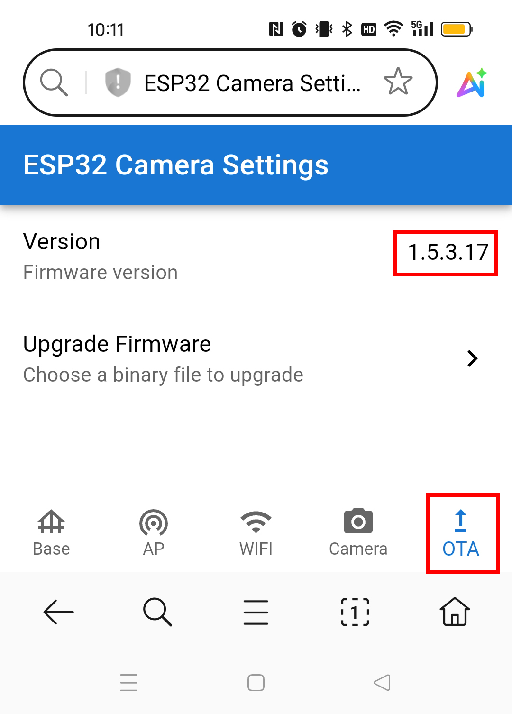
Tap the Upgrade Firmware button.
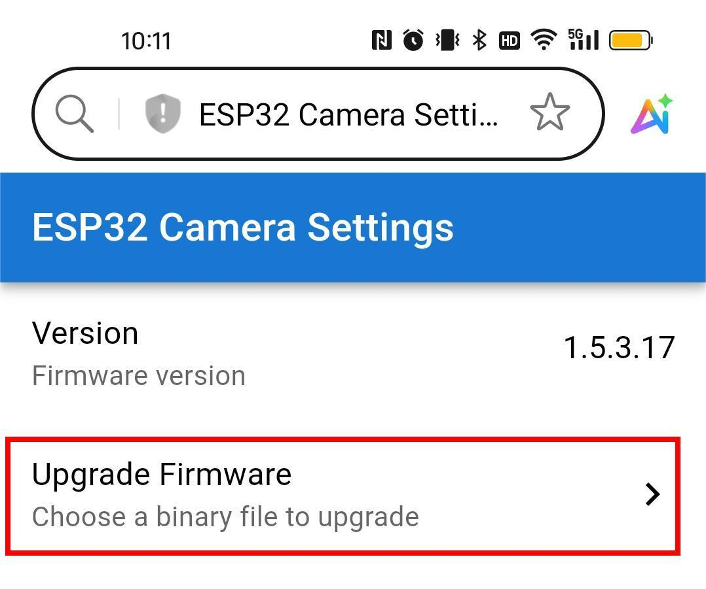
A file selection dialog will appear. Navigate to and select the
ai-camera-firware.ino.x.x.x.binfile you transferred to your mobile device earlier.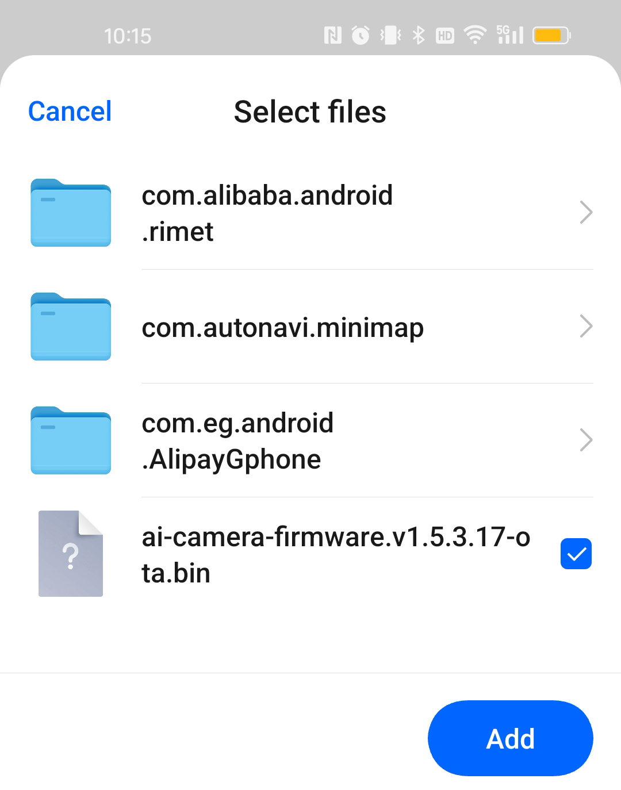
The firmware update will begin immediately after you select the file.
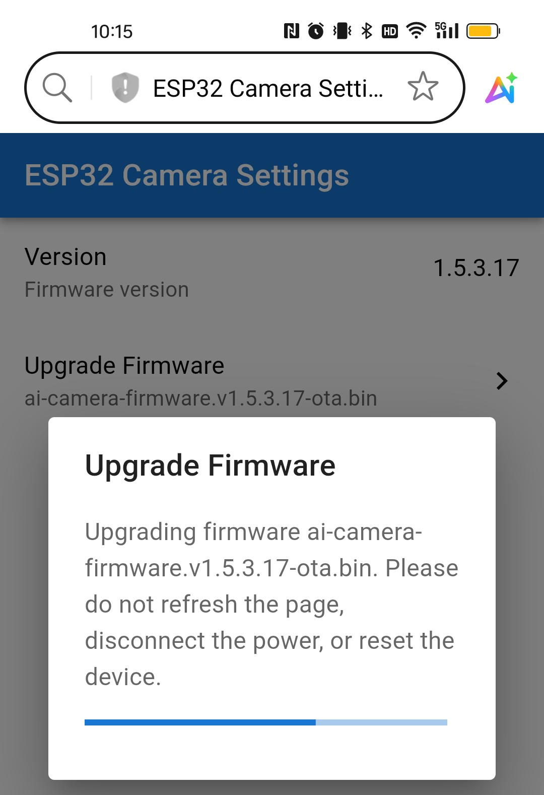
Wait for the firmware upgrade to complete.
The upload process typically takes 1-2 minutes. Once finished, a success message will appear in a pop-up window.
You can then select CONFIRM to restart the GalaxyRVR or CLOSE to dismiss the window.
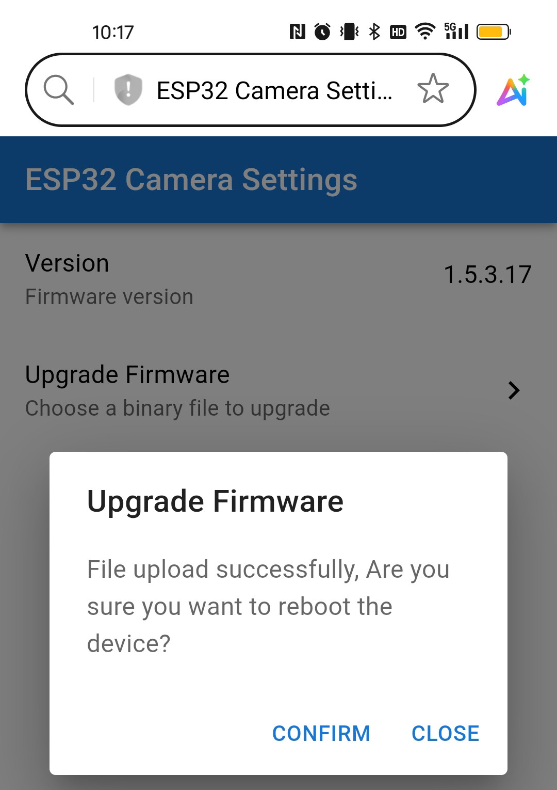
{kind=link}
{kind=link}
{kind=link}
{kind=link}
{kind=link}
3. Updating the R3 Board Firmware
The R3 board includes built-in firmware that enables communication with the RoboPilot APP and Mammoth Coding.
You need to re-upload this firmware if:
Your device uses an older firmware version, or
You have flashed your own Arduino code and want to restore compatibility.
Follow the steps below to reinstall the communication firmware.
Connect the Arduino and computer with a USB cable, and then turn the upload switch of the car to the upload end.

Note
It is the USB Type B port for connecting to Arduino, not the USB Type C port for charging.
Check whether the firmware files have been downloaded.
Run the update script
Open the
galaxy-rvr.ino.xxxfolder (downloaded and installed in the previous step).Double-click the
update-arduino-firmware.batscript.A command prompt window will appear automatically.
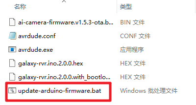
Select the serial port and upload
In the command prompt, a list of available serial ports will be displayed.
Enter the sequence number shown on the left to select the Arduino Uno’s serial port.
Press Enter to begin the automatic upload.
Example: If the list shows 1 USB-SERIALXXX (COMxx), enter 1 and press Enter.
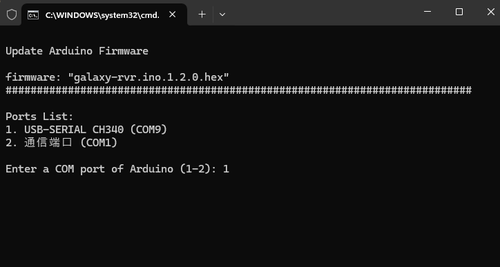
After waiting for the upload to complete, you can unplug the USB cable.
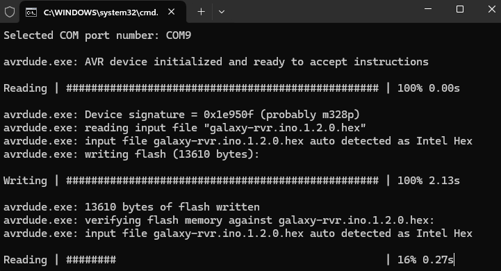
Note
This code enables the GalaxyRVR to respond to APP commands. You won’t need to upload any additional code when using either the RoboPilot remote control APP or the Mammoth Coding software.
You can now proceed to Quick Start to start your GalaxyRVR journey!